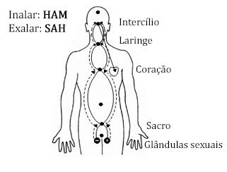
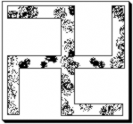

Conferência nº 46
COMO CONTROLAR POLUÇÕES NOTURNAS E CAÍDAS SEXUAIS
Para poder lograr a perfeita Castidade é necessário estudar algumas coisas que nos fazem perdê-la:
AS POLUÇÕES NOTURNAS:
Uma polução é um derramamento ou perda de Energia Criadora Sexual que se dá durante as horas do sono. Enquanto o Corpo Físico descansa na cama o Corpo Astral está em atividade. Através do cordão de prata se transmite vibrações que vem ao Corpo Físico, originando um derramamento de energia sexual no mesmo.
Quando alguém quer acabar com o eu das poluções noturnas deve trabalhar as distintas facetas que apresenta. Agora vamos estudar algumas delas:
-
Por um lado temos as IMPRESSÕES. No transcurso do dia recebemos muitas impressões. Essas impressões chegam a nós por meio dos sentidos. Portanto, temos impressões visuais, auditivas, olfativas, gustativas e sensitivas ou táteis.
As impressões se podem transformar quando nos encontramos em estado de vigília, quando nos auto-observamos e temos recordação de si. Porém, se baixamos a guarda não há quem transforme a impressão, e por tanto se dá a identificação.
Todas as impressões não transformadas podem chegar a produzir uma polução noturna ou caída sexual.
-
Estão também as IDENTIFICAÇÕES. Nos identificamos com muitas coisas, vocês mesmos vão ver, por exemplo, que poderíamos identificar-nos com um processo de ira, luxúria, cobiça, etc. A pessoa pode identificar-se com uma saia que viu, com umas pernas, se pode identificar com uns seios, com os olhos, com um rosto, com os cabelos, com o que quer que seja, a bebida, a comida em excesso, etc.
As identificações nos podem levar a uma polução noturna ou caída sexual. Se a pessoa tem uma impressão, por exemplo, visual, e nestes momentos trabalha essa impressão visual e pede morte, não haverá identificação.
-
A LASCÍVIA é o desejo frustrado de sexo. Através da lascívia entram em atividade todos os eus luxuriosos e o desejo sexual com todas as pessoas que vemos. Tornam-se os sonhos realidade em sonhos eróticos.
-
Os distintos DETALHES LUXURIOSOS do dia.
-
Tem outro ponto que pode causar perdas da Energia Criadora Sexual: o ATAQUE DE UMA BRUXA. Uma bruxa pode tentar roubar a energia sexual durante a noite, através da quarta dimensão, e produzir no plano físico um derramamento de energia sexual. Nestes casos é importante que aprendamos a defender-nos ou proteger-nos para quando se dêem este tipo de ataques, para impedir qualquer roubo de energia.
Com uma tesoura de aço, colocadas em cruz, mostarda negra (grão negro/vermelho) em círculo ao redor da tesoura e uma súplica ao Elemental da mostarda para que nos defenda, podemos capturar a bruxa que o tente.
-
ATAQUES DURANTE O SONO. Estes ataques que faz a Loja Negra implicam que quando vamos dormir devemos conjurar e fechar-nos com o Belilím e o Circulo Mágico. Daí a importância de aprender a conjurar e manter-nos fechados o maior tempo possível do dia. Sobre tudo quando se vão fazer as práticas de sexo. Uma prática de sexo sem a Conjuração e o Circulo Mágico equivale a uma caída sexual. O estudante deve aprender também a defender-se com a Conjuração de JÚPITER.
-
Outro aspecto, e um dos mais importantes para trabalhar, é a questão das COMIDAS. Evitar:
- a) comidas que contenham porco (tem efeitos de até quinze dias);
- b) comidas cozidas em recipiente que tenha feito porco;
- c) comer peixes sem escamas, bagres ou peixes de pântano (lamaçal) que se alimentam com fezes;
- d) comer peixes de criadeiro alimentados com esterco e anabólicos;
- e) comidas tóxicas;
- f) todos os embutidos e carnes em conservas;
- g) todos os licores obram impedindo a Castidade.
Então, é necessário comer comidas frescas. Qualquer das anteriores podem originar poluções noturnas ou caídas sexuais.
-
O NÍVEL DO COPO. Todos nós temos um copo onde se deposita a Energia Criadora Sexual. Notaram que nos sentimos mais excitados quando o nível do copo está cheio ou do meio para cima. Então, qualquer coisa nos demanda para a atividade sexual, porque é de tipo instintivo.
Isto está demonstrando que temos que aprender a manejar os níveis de energia do corpo. Vocês sabem muito bem que se um copo enche se derrama. Quando uma pessoa tem o nível do copo alto, e não tem com quem transmutar sua energia, ou tem seu cônjuge, porém, não pode praticar por alguma razão de saúde ou do que seja. O que tem que fazer para evitar que o copo se derrame?
Pois aprender a SUBLIMAR A ENERGIA.
Então vamos dar a prática de Sublimação de Energia. O que é sublimar a energia? É aprender a seminizar o cérebro, mediante um exercício respiratório. Esse exercício é um pranayama onde nós vamos a imaginar nossa coluna vertebral e nosso cérebro. E vamos a sublimar a energia pelos canais ganglionares de Idá e Pingalá. Aqui nós imaginamos as glândulas sexuais e o nariz. O importante é aprender a imaginar como se dá o processo.
De um lado encontramos o Idá e do outro lado o Pingalá.
Estas duas serpentes permitem sublimar a energia através do Corpo Vital, fazendo este exercício respiratório e utilizando o mantra HAM - SAH.
HAM alongando, ao inalar; SAH curto, ao exalar. A inalação dura uns vinte segundos e a exalação dois segundos aproximadamente. Faz-se uma pausa antes de voltar a inalar.
Tampamos a fossa nasal esquerda e inalamos pela fossa nasal direita; Imaginamos que nossa energia ascende e chega até a fossa nasal direita.
Se começa desde o testículo esquerdo, que é positivo, e chega até a fossa nasal direita. Logo, desde o testículo direito, que é negativo, até a fossa nasal esquerda. Uma pessoa imagina, porque imaginar é ver, que a energia vai subindo alternadamente pelos dois condutos de Idá e Pingalá. Desta forma descemos o nível do copo e mantemos sempre nossa energia em uns níveis muito bons, para que não se perca nem se derrame a energia em nenhum momento.
No caso das mulheres se inverte a polaridade. Os signos estão trocados, porém é exatamente igual que nos homens. As damas começam pelo ovário direito e a fossa nasal esquerda, e seguem pelo ovário esquerdo levando a energia para a fossa nasal direita.
A Energia Criadora Sexual a produz o cérebro na Glândula Pineal. Esta recolhe a energia do Espírito e a une ao Hidrogênio Sexual. Este exercício é regenerador, e ajuda muito nas questões de saúde.
A Sublimação não se deve fazer senão uma vez ao dia, durante uns dez minutos. As melhores horas para sublimar são das quatro às seis da manhã, quando se está levantando, quando o Corpo Vital há restabelecido a energia do Corpo Físico.
Não se requer mais que isto. Praticando vocês mesmos se darão conta de que é muito fácil e ajuda muito.
-
OS LUGARES E AS LARVAS. Existem muitos lugares que visitamos que estão cheios de larvas: teatros, cemitérios, prostíbulos, motéis, hotéis, boates, igrejas, salas de cinema erótico, etc.
Se por alguma razão temos que ir a um destes lugares, devemos limpar-nos com uma suástica. Se faz com enxofre e se queima com álcool sobre uma lajota. Além disso, se colocar uma pitada dentro dos sapatos, impede que as larvas subam aos pés e cheguem ao quarto.
-
A FALTA DE CONCENTRAÇÃO NA PRÁTICA DE SEXO.
- Sempre se deve pedir Assistência ao Pai e a Mãe Divina antes de iniciar uma prática sexual.
- Nunca se deve praticar sem a Conjuração do Belilim e do Círculo Mágico, do contrário se está exposto a um ataque.
- A falta de concentração na prática origina as caídas sexuais, se dão porque permitimos que a mente fique revoluteando por ai. Onde estiver a mente ai estará a nossa Consciência.
- Se recomenda praticar a dança dos dervixes antes de iniciar, para poder lograr uma boa concentração e espantar o eu da preguiça.
- Quando se está praticando, cada qual, tem que concentrar-se em seus órgãos sexuais e em sua coluna vertebral, não de seu cônjuge.
- Todos os movimentos devem ser suaves, tem que evitar os movimentos bruscos.
- A alcova do matrimônio gnóstico deve manter-se em magníficas condições de higiene e com muita boa ventilação. Recordem que aí chegam os Mestres para ajudar-nos no trabalho.
- Se recomenda que os casais que iniciam não usar colchões velhos, nem aqueles que anteriormente se há fornicado, pois, estão cheios de larvas.
- Para os que se casam, se recomenda não ir de lua de mel à hotéis, devido a que as camas dos mesmos são camas negras. Assim por fora pareçam muito limpas, são antros da Loja Negra.
-
A MENSTRUAÇÃO. Durante o processo menstrual da mulher, o casal deve separar-se por vários motivos:
- A energia da mulher está passando por um processo de involução, e esta energia atrai a energia do homem para a involução também.
- A mulher em menstruação produz muitas larvas. Por isso não é conveniente que durmam na mesma cama onde se pratica o Supra-sexo, nem que o varão durma com ela.
- Qualquer carícia durante esta semana revive os eus mortos.
-
AS CARICIAS SEM PRÁTICA. Este ponto é muito importante para os solteiros e também para os casados. A maioria não sabe que ao acariciar-se, a energia sexual entra em atividade, isto acontece com a primeira carícia ou beijo. Se essa energia não evolui, então, involui. Mais tarde a pessoa irá deitar-se e virão as poluções noturnas; e se vai praticar, vem a caída sexual.